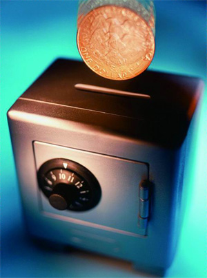

Proprietary Trading
■ Equity Securities Investment
Stable and flexible investment strategy
Equity securities investment is to invest in stocks, equity funds, and other equity securities with one’s own funds. Over the years, GF has been insisting on stability and flexibility in equity securities investment. From 2003 to 2011, compound return on equity securities investment reached as high as 18.84%, compared to 5.51% of SSE Composite Index.
■ Fixed Income Investment
Executive Director of National Debt Association of China, First-class Dealer in Shanghai Stock Exchange, Member of National Association of Financial Market Institutional Investors.
 Fixed income investment is to invest in fixed income securities and arbitrage activities with low risk strategies. In 2011, GF’s trading volume in institutions achieved RMB 94 billion.
Proprietary Trading Products
GF invests in government bonds, central bank notes, commercial paper, enterprise bonds, convertible bonds, money market funds, securitized products, interest swaps, and repos collateralized.
Arbitrage
GF searches for arbitrage opportunities among financial products and derivatives through accurate quantitative modeling and sophisticated risk control.
■ Derivatives
First Prize in 1st Futures and Options Research Competition
First securities company being qualified to trade in stock index options
Derivatives business primarily involves in stock index options, warrants, ETF, quantitative investment, strategy investment, ETF first-class dealer, warrant creation, warrant first-class dealer, and structured innovation products.
Leader in Quantitative Investment
Utilizing technological advantage in financial engineering, exploring new investment pattern and methods, exploiting new investment areas, GF has been among the first companies to establish business model and business processes from strategic development to investment practice.
Leader of Warrant Design and Creation
For warrant business, GF is on the top ranked by volume. Warrant issuances of China Yangtze Powerr Co., Ltd (600900) and Wuhan Iron and Steel Co., Ltd (600005) have become well-known cases in the industry.
Structured Products
“Fabao” 1 Capital Trust Plan, in which GF proposed framework for product design and acted as investment consultant, was completed successfully in June, 2009. It is the first standardized ELN (Equity Linked Note) trust product. GF shows its innovation to domestic securities and financial market.